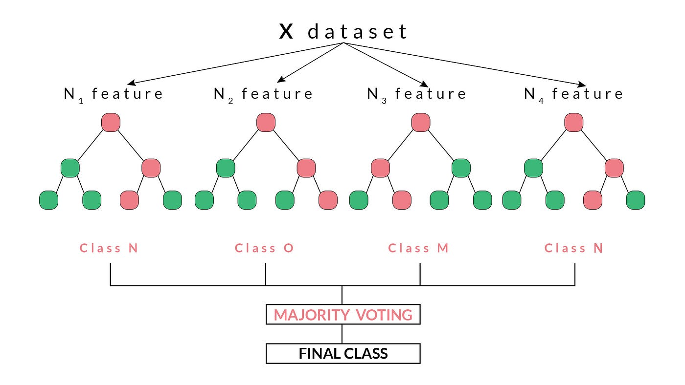
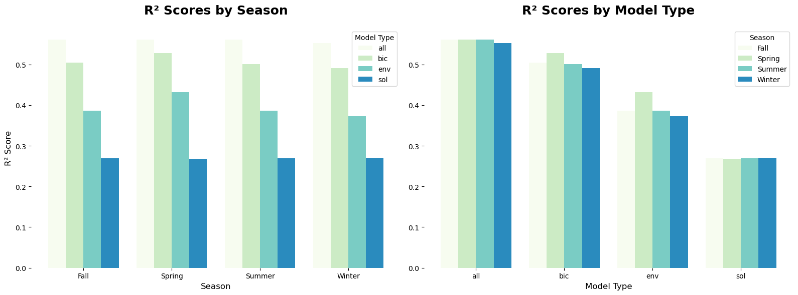
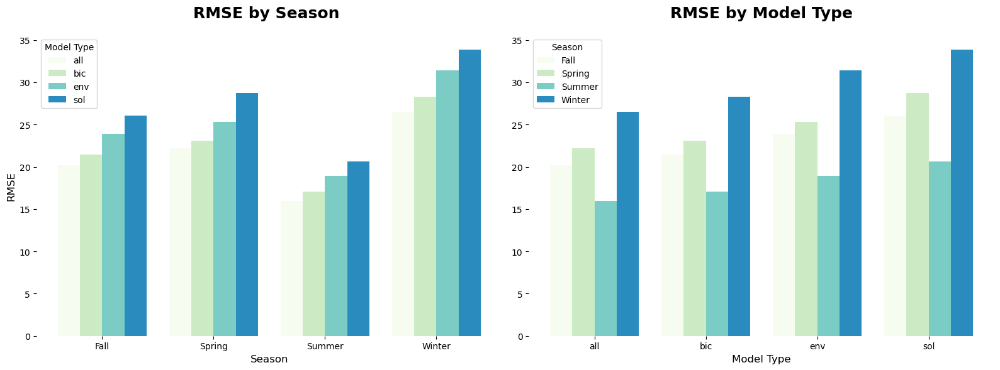
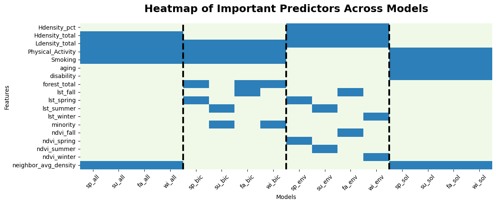
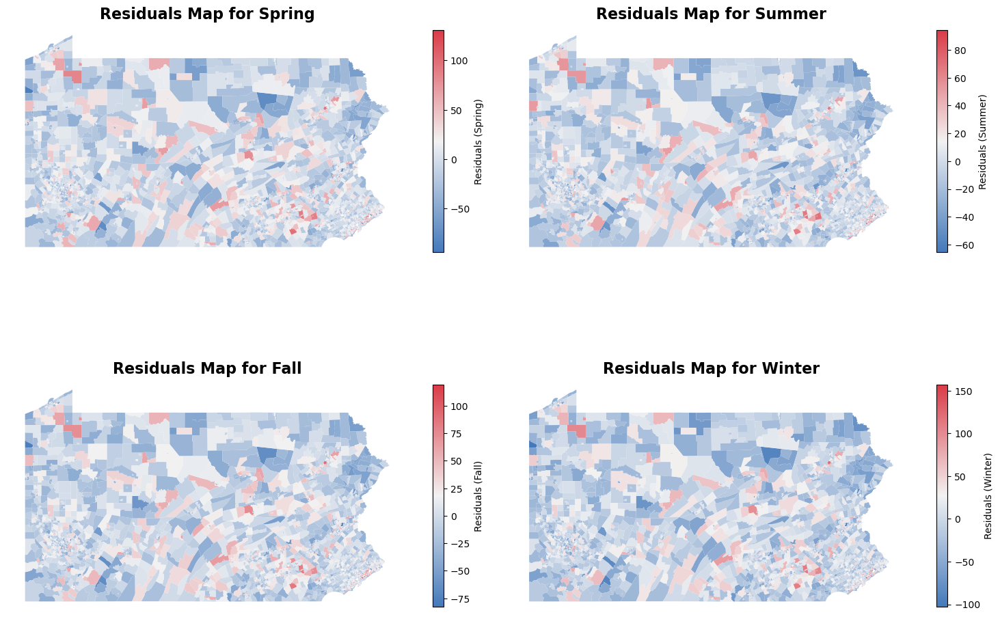

In this notebook, we will evaluate the power of each of our predictors in predicting COPD and assess their effectiveness for different seasons. Specifically, we will run Random Forest Regressions on all of our predictors, predictors after dimensionality reduction, using only sociobehavioral variables, and using only environmental variables. While there are some multicollinearities in the dataset, we proceed with this approach as Random Forests handle multicollinearity by averaging over multiple trees, reducing the risk of overfitting and still providing valuable insights into feature importance.
We will mainly draw on the following packages from sklearn in this section:
metrics, which includes make_scorer, mean_squared_error, r2_score, mean_absolute_error: Provides functions to evaluate the performance of the regression models, calculating error metrics and scoring metrics like R².
model_selection, mainly train_test_split: Used to split the dataset into training and testing sets, ensuring the model is validated on unseen data.
ensemble, mainly RandomForestRegressor: The core model used for regression, which builds multiple decision trees and combines their predictions to enhance accuracy.
model_selection, mainly cross_validate: Allows cross-validation to assess the performance of the model across different subsets of the data, helping to ensure the model generalizes well.
Code
import numpy as npimport pandas as pdimport geopandas as gpdimport seaborn as snsimport matplotlib.pyplot as pltfrom sklearn.pipeline import Pipelinefrom sklearn.model_selection import train_test_splitfrom sklearn.svm import SVRfrom sklearn.metrics import make_scorer, mean_squared_error, r2_score, mean_absolute_errorfrom sklearn.preprocessing import StandardScalerfrom sklearn.linear_model import LinearRegressionfrom sklearn.ensemble import RandomForestRegressorfrom sklearn.model_selection import cross_validate, cross_val_predictimport tensorflow as tffrom scipy.stats import normimport warningswarnings.filterwarnings('ignore')
The Random Forest Model
A Random Forest model is a versatile machine learning algorithm commonly used for regression analysis. It operates by constructing a multitude of decision trees during training and outputs the average of their predictions to provide robust and accurate results. Each tree in the forest is trained on a random subset of the data, with features also randomly sampled at each split, which helps reduce overfitting and ensures diversity among the trees. This ensemble approach improves model stability and accuracy by leveraging the collective predictions of multiple trees. Random Forest is particularly effective when dealing with datasets that have complex relationships, non-linear patterns, or a mix of categorical and continuous variables. It also provides insights into feature importance, allowing researchers to understand the relative contribution of each predictor in the model. Despite its strengths, Random Forest models can be computationally intensive and may require careful tuning of hyperparameters like the number of trees and maximum tree depth for optimal performance.
Random Forest Regressor

Since we will be running the machine learning model multiple times for each seaon’s data, we defined some helper functions to streamline the process. The split_and_scale_data function prepares the data for Random Forest Regression by first splitting it into training and testing sets using train_test_split with stratification to maintain the target variable distribution. It then scales the features using StandardScaler to standardize the data, ensuring that all features contribute equally to the model. This step is crucial for consistent model performance, especially when features have varying scales (like ours).
Code
def split_and_scale_data(X, y, stratify_col, test_size=0.2, random_state=42):# Split the data X_train, X_test, y_train, y_test = train_test_split( X, y, test_size=test_size, random_state=random_state, stratify=stratify_col )# Scale the data scaler = StandardScaler() X_train_scaled = scaler.fit_transform(X_train) X_test_scaled = scaler.transform(X_test)return X_train_scaled, X_test_scaled, y_train, y_test, scaler
The train_and_evaluate_rf function trains a Random Forest model using the RandomForestRegressor with a specified number of estimators. It fits the model to the training data and then makes predictions on the test set. The function calculates key performance metrics, including Mean Squared Error (MSE), Root Mean Squared Error (RMSE), R-squared (R²), and Mean Absolute Error (MAE), to evaluate model accuracy. Additionally, it computes feature importances to identify which variables contribute most to the model’s predictions, returning the predictions, evaluation metrics, and a sorted dataframe of feature importances.
The extract_results function extracts key results from the output of a model evaluation. It retrieves the RMSE (Root Mean Squared Error) and R² (R-squared) metrics from the results, which provide insights into the model’s accuracy. The function also extracts the top 5 most important features based on their feature importances, which help in understanding which variables have the greatest influence on the model’s predictions. It returns both the performance metrics and the list of top features.
Code
def extract_results(results, method_name):# Extract metrics metrics = [results['rmse'], results['r2']]# Extract top 5 features top_features = results['importance_df']['Feature'].head(5).tolist()return metrics, top_features
Fitting the Model
The above functions will be applied separately using four different sets of predictors: all variables, only environmental variables, only sociobehavioral variables, and variables after dimensionality reduction. This approach allows us to assess the predictive power of each group of variables and determine their effectiveness in predicting COPD for each season. For each season, four models will be trained and evaluated.
After running the model 16 times (4 models for each of the 4 predictor sets across the seasons), we obtain 16 result outputs. From each model, we extract the R² and RMSE metrics as well as the top five predictors contributing the most to the predictions. The RMSE (Root Mean Squared Error) represents the average magnitude of prediction error, where lower values indicate better model performance. The R² (coefficient of determination) reflects the proportion of variance in the target variable that is explained by the predictors, with values closer to 1 indicating a better fit.
Again, the purpose of this analysis is to evaluate the predictive strength of different sets of variables and identify the most impactful predictors for COPD across seasons. All results are compiled into a unified table for easier interpretation, and the output is displayed below.
The analysis of R² values reveals several important insights about the performance of our models in predicting COPD across different seasons and predictor subsets. First, models that include all predictor variables consistently achieve the highest R² scores for every season. This indicates that combining environmental and sociobehavioral factors provides the most comprehensive understanding of the variability in COPD, as these variables likely capture a wide range of relevant influences.
When dimensionality reduction is applied, the R² values decrease, suggesting some loss of information. However, even with dimensionality reduction, the models explain more than half of the variability in COPD outcomes. This implies that while reducing the number of predictors sacrifices some predictive power, the retained variables are still meaningful contributors to the model. Comparing the models that use only environmental or sociobehavioral variables, the R² values are higher for the environmental variable models across all seasons.
Seasonal differences emerge as a key aspect of the analysis. The spring models achieve the highest R² values when all predictors are used and when only environmental variables are included, but they exhibit the lowest R² when using only sociobehavioral variables. This trend is followed by the summer and fall models, which also show relatively strong R² values under similar conditions. In contrast, the winter models have the highest R² values when using only sociobehavioral variables, indicating a distinct seasonal dynamic.
Given that the primary difference between seasonal models lies in the local environmental vegetation indices, these results suggest that winter environmental factors may contribute less variability to COPD outcomes compared to sociobehavioral variables during this season. This could reflect reduced vegetation activity and lower pollen levels in winter, leading to less influence of environmental predictors. Conversely, the higher R² values for spring models with environmental predictors likely reflect the strong impact of vegetation indices and related environmental conditions, such as increased pollen levels and changing air quality, which are more pronounced during spring compared to winter

Comparing the RMSE Across 16 Models
Table Showing RMSE By Model and Season
Model
all
bic
env
sol
Season
Fall
20.206061
21.468205
23.912397
26.083081
Spring
22.224898
23.072179
25.313270
28.704642
Summer
15.974291
17.034905
18.888489
20.598157
Winter
26.535056
28.319169
31.423747
33.886842
Examining the RMSE results, the summer models consistently exhibit the lowest RMSE across all model types, while the winter models show the highest RMSE. Including all variables results in significantly lower RMSE values, reflecting better predictive accuracy. Conversely, dimensionality reduction slightly increases RMSE, and the highest RMSE values are observed when using only sociobehavioral variables.
These RMSE findings align with the R² results. Lower RMSE and higher R² values in the “all predictors” models indicate that the inclusion of both environmental and sociobehavioral variables leads to more accurate and explanatory models for predicting COPD. The slightly higher RMSE and lower R² values after dimensionality reduction suggest some loss of information, which reduces the model’s predictive power but still maintains reasonable performance.
Seasonally, the lowest RMSE in summer models suggest that summer conditions may lead to more predictable COPD outcomes, potentially due to less variability in environmental factors like vegetation indices or air quality during this time. On the other hand, the higher RMSE in winter, coupled with relatively lower R² values for environmental models, points to a weaker relationship between winter environmental conditions and COPD. This reinforces the earlier observation that sociobehavioral variables play a more prominent role in winter, where environmental variability is less influential.

Compare Predictors with Highest Contribution
In models that include all predictor variables, development density stands out as the most significant contributor, followed closely by physical activity and neighborhood tobacco retail density. Smoking behaviors also play a role but come after the previous factors. These results indicate that population and urban infrastructure characteristics—such as density—along with lifestyle factors like physical activity and smoking, are crucial in explaining the variability in the models. This aligns with the notion that urban environments and behavioral factors are closely tied to the outcomes being modeled, such as health-related outcomes.
sp_all
su_all
fa_all
wi_all
Feature 1
Hdensity_total
Hdensity_total
Hdensity_total
Hdensity_total
Feature 2
Ldensity_total
Ldensity_total
Ldensity_total
Ldensity_total
Feature 3
Physical_Activity
Physical_Activity
Physical_Activity
Physical_Activity
Feature 4
neighbor_avg_density
neighbor_avg_density
neighbor_avg_density
neighbor_avg_density
Feature 5
Smoking
Smoking
Smoking
Smoking
When we perform dimensionality reduction, the results shift slightly, but core contributors remain consistent. Density and physical activity continue to be among the most significant predictors, underscoring their consistent importance across various model configurations. However, other predictors such as land surface temperature (LST) by season and smoking behavior start to show a more prominent role. This shift indicates that once we reduce the number of variables, the remaining predictors capture more specific, localized aspects like seasonal temperature changes and personal health behaviors (e.g., smoking), which become increasingly important.
sp_bic
su_bic
fa_bic
wi_bic
Feature 1
Ldensity_total
Ldensity_total
Ldensity_total
Ldensity_total
Feature 2
Physical_Activity
Physical_Activity
Physical_Activity
Physical_Activity
Feature 3
lst_spring
lst_summer
lst_fall
forest_total
Feature 4
forest_total
Smoking
Smoking
Smoking
Feature 5
Smoking
minority
forest_total
minority
In models that only include social behavioral variables, it is not surprising to see that physical activity emerges as the top contributor.
sp_sol
su_sol
fa_sol
wi_sol
Feature 1
Physical_Activity
Physical_Activity
Physical_Activity
Physical_Activity
Feature 2
neighbor_avg_density
neighbor_avg_density
neighbor_avg_density
neighbor_avg_density
Feature 3
disability
disability
disability
disability
Feature 4
aging
aging
aging
aging
Feature 5
Smoking
Smoking
Smoking
Smoking
Turning to environmental predictors, we observe that development density, surface temperature, and NDVI (Normalized Difference Vegetation Index) emerge as the most important. These factors are indicative of the environmental characteristics that influence health outcomes. However, seasonal differences emerge when we look specifically at the winter models. In winter, both vegetation indices and temperature seem to have less influence compared to the other seasons. This may be due to reduced vegetation activity and temperature fluctuations in winter, making these factors less relevant to the outcome in colder months.
sp_env
su_env
fa_env
wi_env
Feature 1
Hdensity_total
Hdensity_total
Hdensity_total
Hdensity_total
Feature 2
Ldensity_total
Ldensity_total
Ldensity_total
Ldensity_total
Feature 3
lst_spring
ndvi_summer
Hdensity_pct
Hdensity_pct
Feature 4
Hdensity_pct
lst_summer
lst_fall
lst_winter
Feature 5
ndvi_spring
Hdensity_pct
ndvi_fall
ndvi_winter
By examining these results together, we see how different types of predictors—social behavioral versus environmental—interact with seasonal changes and dimensionality reduction. The consistency of physical activity and development density top predictors across models highlights their importance as a fundamental health-related factor, irrespective of seasonal variations or environmental conditions. Conversely, environmental factors such as temperature and vegetation indices appear to be more sensitive to seasonal changes, with winter showing a distinct reduction in their relevance.

Understanding Prediction Error
In the previous sections, we highlighted the importance of including both environmental and social behavioral predictors in our model for a comprehensive understanding of COPD. We also explored how seasonal differences influence the model’s performance. However, it is crucial to validate the effectiveness of these predictors in accurately measuring COPD.
In this section, we run random forest regression for each season, using the predictors after dimensionality reduction, to compare predicted and actual COPD rates at the census tract level. We will also create maps to visualize areas where the model under- or over-predicts, at both the census tract and county levels, as public health interventions are often implemented at the county level.
Predicted VS. Actual
In this code, we are performing cross-validation (CV) to evaluate the performance of a random forest regression model, rather than using an explicit train-test split. Cross-validation is a technique that divides the dataset into multiple subsets (or “folds”) and iteratively trains the model on a portion of the data while testing it on the remaining data. This process is repeated for each fold, allowing the model to be validated on different portions of the data. As a result, cross-validation provides a more robust estimate of the model’s generalization performance because it reduces the risk of overfitting that might occur with a single train-test split.
Code
def train_and_evaluate_rf_with_cv_predictions(X, y, n_estimators=100, random_state=42, cv=5): pipeline = Pipeline([ ('scaler', StandardScaler()), ('rf', RandomForestRegressor(n_estimators=n_estimators, random_state=random_state)) ])# Define custom scorers scoring = {'mse': make_scorer(mean_squared_error, greater_is_better=False),'r2': make_scorer(r2_score) }# Perform cross-validation to calculate metrics cv_results = cross_validate(pipeline, X, y, scoring=scoring, cv=cv, return_train_score=False)# Perform cross-validation to get predictions predictions = cross_val_predict(pipeline, X, y, cv=cv) results = {'mean_rmse': np.sqrt(-np.mean(cv_results['test_mse'])), # Convert negative MSE to positive RMSE'mean_r2': np.mean(cv_results['test_r2']),'predictions': predictions # Cross-validated predictions for the entire dataset }return results
When we examine the residuals versus predicted plot, we may observe that the R² value has dropped compared to when we used a simple train-test split for the regression model. This is a natural outcome of using cross-validation, as the model is evaluated on multiple subsets of the data, which provides a more reliable estimate of its performance. Cross-validation tends to give a more conservative estimate of model accuracy because the model is tested on more diverse data points, making the evaluation less optimistic than a single train-test split might suggest.
Across the different seasons, we see that the variability in R² is relatively small, but there are still differences—specifically, the spring model tends to have the highest R², while the winter model has the lowest. This trend aligns with previous observations, reinforcing the notion that seasonal variations play a role in how well the model can predict COPD rates. The lower R² in winter suggests that the model may struggle more to capture patterns in the winter data, possibly due to seasonal factors like temperature or air quality that affect COPD differently across seasons.
A key observation in the residual plot is the presence of a positive linear pattern. This pattern indicates that the model may be consistently underpredicting or overpredicting certain ranges of the data. In a well-fitted model, residuals should ideally be randomly distributed around zero, with no discernible pattern. The positive linear relationship suggests that as the predicted values increase, the residuals (or errors) also increase, meaning the model might not be capturing a certain aspect of the data adequately. This could point to a need for further feature engineering or model adjustments, such as incorporating additional variables or using a different algorithm, to better model the data and improve accuracy.
We also mapped the residuals at the census tract level to better understand where our model is underpredicting and overpredicting. In this context, positive residuals indicate areas where the model is underpredicting COPD rates, and negative residuals suggest overprediction. Upon initial inspection, the pattern is not immediately clear across all seasons, suggesting that more information is needed to understand the underlying causes of these prediction errors within different regions of Pennsylvania.
However, a closer examination reveals more nuanced insights, particularly in urban areas like Philadelphia. In northern Philadelphia, the model tends to underpredict COPD rates, while in the surrounding suburban areas, there is more overprediction. Interestingly, very rural areas also show underprediction, which could reflect the lack of sufficient data or features that explain COPD patterns in these regions. This pattern is important because it points to geographic and demographic factors that the model may not be fully capturing.
Another finding is that if a census tract is underpredicting or overpredicting, nearby tracts tend to exhibit similar prediction errors. This suggests a spatial continuity in the model’s inaccuracies, possibly driven by regional characteristics that influence multiple neighboring tracts in the same way.

When we average the residuals by county, the overall patterns shift significantly. Across all seasons, the model tends to underpredict COPD rates at the county level, with the exception of a few counties in northern Pennsylvania, where the model slightly overpredicts. This observation highlights how the geographic scale of analysis can influence our understanding of model performance and error distribution, thereby affecting policymaking and resource allocation strategies.
At the county level, this consistent underprediction suggests that broader, regional factors might be driving COPD rates in ways that the model does not fully capture. However, when we examine the residuals more closely, it becomes evident that the errors are not particularly large, even in areas with underprediction. This implies that while the model’s performance may vary by geography, its overall accuracy remains relatively stable.